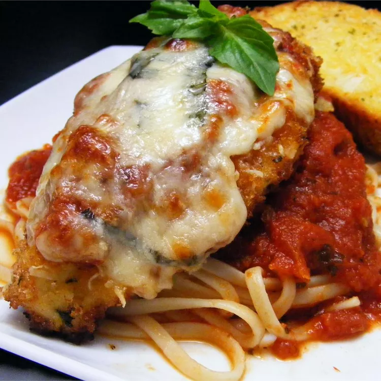

Bolognesa

Descripcion
Esta pasta con pollo y parmesano es el plato perfecto para atraer a los niños a la cocina. ¿A qué niño no le gusta el pollo crujiente y los espaguetis? Esta receta rinde el doble de la salsa necesaria, así que congela la mitad para otra comida.
Ingredientes
- 2 cucharadas de aceite de oliva virgen extra
- 2 dientes de ajo medianos , pelados y machacados
- 1 lata (28 onzas) de tomates triturados
- ½ cucharadita de albahaca seca
- ¼ cucharadita de orégano seco
- ¼ cucharadita de azúcar
- Sal y pimienta negra recién molida al gusto
Pasta:
- 8 onzas de espaguetis o linguini
Chuletas de pollo:
- 2 pechugas de pollo grandes , deshuesadas y sin piel (de 6 a 8 onzas cada una), cortadas transversalmente por la mitad
- 1 huevo grande
- ½ taza de pan rallado seco
- pimienta negra recién molida al gusto
- ¼ taza de aceite de oliva extra virgen
- ½ taza de queso mozzarella parcialmente descremado rallado
- ¼ de taza de queso parmesano rallado, y un poco más para servir
Pasos
- preparar la salsa de tomate: Calienta el aceite y el ajo en una cacerola grande a fuego medio-alto hasta que el ajo comience a chisporrotear.
- Agrega los tomates, la albahaca, el orégano y el azúcar; sazona con sal y pimienta.
- Lleva a hervor lento; cocina hasta que la salsa se espese levemente y los sabores se combinen, de 10 a 12 minutos.
- Tapa y mantén caliente. (Recuerda, esto rinde el doble de la cantidad de salsa necesaria, así que reserva la mitad para otra comida).
- Mientras tanto, pon a hervir una olla grande con agua ligeramente salada.
- Cocina los espaguetis en agua hirviendo, revolviendo de vez en cuando, hasta que estén tiernos pero firmes al morderlos, aproximadamente 12 minutos.
- Escúrrelos y mantenlos calientes.
- Para hacer las chuletas de pollo: Coloque los trozos de pollo entre dos hojas de film transparente.
- Utilice un mazo o una sartén pesada para golpear el pollo hasta que tenga un grosor de aproximadamente 1/4 de pulgada.
- Batir el huevo en un plato hondo hasta que esté bien mezclado.
- Sazonar el pan rallado con pimienta negra en otro plato hondo.
- Precaliente el asador del horno a temperatura alta.
- Coloque una rejilla a 4 o 5 pulgadas de la fuente de calor.
- Trabajando con una chuleta a la vez, sumerja el pollo en huevo batido y luego en pan rallado.
- Coloque las chuletas empanizadas sobre una rejilla de alambre colocada sobre una placa para horno (este paso ayuda a que el empanizado se mantenga en su lugar).
- Calienta 1/4 taza de aceite en una sartén de 12 pulgadas a fuego medio-alto hasta que brille.
- Freír las chuletas empanizadas en aceite caliente hasta que se doren por ambos lados, durante unos 5 minutos.
- Lavar y secar la rejilla y devolverla a la placa para horno; colocar las chuletas fritas sobre la rejilla limpia.
- Cubra cada chuleta con queso mozzarella y parmesano.
- Áselas hasta que el queso se derrita y adquiera un tono marrón, de 2 a 3 minutos.
- Reparte la pasta en 4 platos y coloca una chuleta de pollo encima de cada uno.
- Vierte de 2 a 3 cucharadas de salsa de tomate sobre cada chuleta y luego sazona la pasta al gusto.
- Sirve con parmesano extra en la mesa.